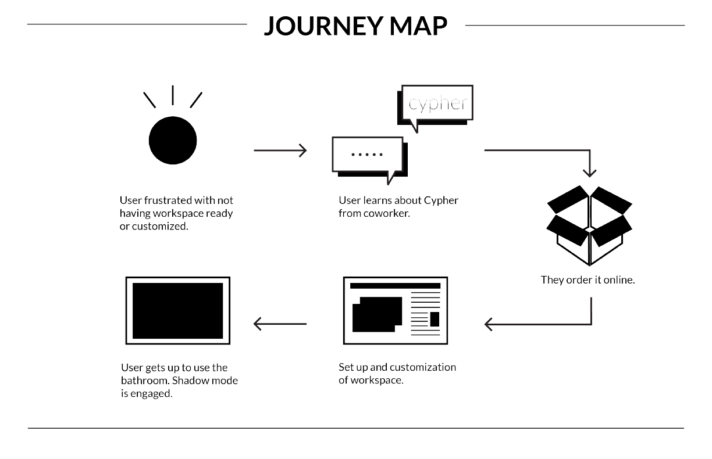

Cypher is a decentralized, Internet of Things (IoT) system
that gives agency and digital anonymity to workers in
co-working spaces.
PITCH DECK
ASSUMPTIONS
In 2040, it is assumed that data mining and surveillance are a prevalent issue,
making it increasingly tougher to protect the users anonymity as well as
information about who they are, where they are located and who they are working for.
The project aims to give agency back to the user and helps them keep sensitive data private,
and create a streamlined environment, which they are able to customize to their liking.
HOW IT WORKS
Workspaces will be unlocked via a physical key that houses a personal encrypted, ID token.
When the user approaches their workspace within a larger coworking space (i.e. a desk), their key sends an encrypted password to the IoT workspace system.
When the IoT system receives the password it sets workspace elements such as temperature, lighting, and seat specifications.
Cypher also unlocks the user's interface: a digital workspace removed from the big five, which allows for file creation, storing, and sharing.

HARDWARE + SOFTWARE
To create the iOt, I used RFM69 Breakout Boards with an Arduino and connected the
serial outputs
to a node server. When the server recieves the key, the customized workspace is activated.